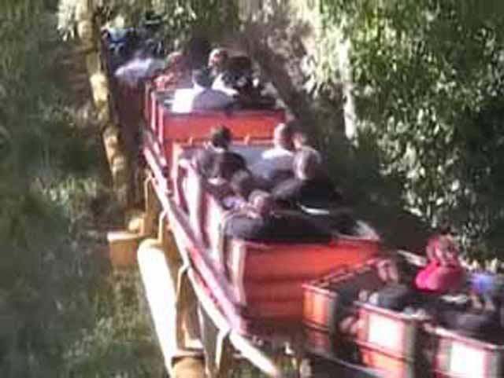

| |
Goldrusher Review
We're here at Six Flags Magic Mountain. Today's ride we'll be reviewing for you is Goldrusher. The 1st coaster Magic Mtn ever built. After getting in the cars, you make a quick turn around Spinouts grave and head towards the first lifthill. As you climb the first lifthill, you go under Superman, As you crest the lifthill, you get a nice view of the landscaping (or at least you used to. Now this view is just of a bunch of dirt and Full Throttle). Then you go down the first drop. It's not very exciting, but at least you get a good view of Full Throttle (I like Full Throttle, but I miss Log Jammer and the landscaping). Then after whipping around Full Throttle, you reach lifthill #2. At this point, you think to yourself, "What the hell? We just got off the first lifthill, did a little stuff and now we're going into another freaking lifthill!" After that second freaking lifthill, you go down the second drop. After that, you head straight into a nice big turn. There we will once againg, pass under Superman: Escape from Krypton. Then you slighty curve up into some straight track. From that straight track, you get a good view of Riddlers Revenge. You then pull into a tight turn, which just leads to another tight turn. At this tight turn, you can see the first lifthill and you can tell that there's not much more to your ride. Then you go into some straight track. And then after that you curve up into some straight track which leads you to Goldrusher's Grand Finale. THE HELIX OF DEATH!!! (Not the true helix of death). You dive down and start spiraling to the ground. While it's not intense, it is fun and it makes everyone in the train giggle like little school girls. After that madness, you rise up to the brake run. While Goldrusher isn't really a good ride, it does give some nice views of SFMM. It's an average mine train. It's not as good as Both Thunder Mtns. But hey, there are definetly much worse mine trains out there. However, I would only recommend riding if you're a credit whore who hasn't been to Magic Mtn, are just getting into rollercoasters, or the ride has a walk on wait.
5/10
Location: Six Flags Magic Mountain
Opened: 1971
Built by: Arrow
Last Ridden: October 8, 2023
Goldrusher Photos





Home
|